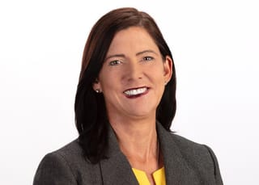

Program leadership
Cadence, dependencies, cross-functional decisions, external partners, remote change, and delivery at platform scale.
Enterprise program delivery, civic coalition work, structured innovation, and product building all use the same core skill: helping people see the system they are in, then creating a credible way forward.

I spent more than a decade leading complex delivery at Omnitracs and Sony Interactive Entertainment, then applied the same facilitation and systems thinking in public, volunteer, and founder-mode settings.
At Sony, I aligned 6+ Agile teams, redesigned planning cadence, led high-stakes commerce delivery, and produced innovation programs that moved ideas toward evidence.
As president of Beautiful PB, I led a 12-member volunteer board, facilitated contested public work, won a $30,000 county grant, helped build the funding credibility behind a $450,000 arts-center campaign, and served as a public spokesperson.
Through Community Play Tools, founded in August 2025, I test how better interaction design can lower the friction of participation. The practice is where I build civic products, engagement systems, and live experiences aligned with my values.
Cadence, dependencies, cross-functional decisions, external partners, remote change, and delivery at platform scale.
Workshops, public speaking, board governance, grant-backed modernization, contested approvals, and multi-agency coordination.
Hackathons, prototypes, focus-group variants, customer discovery, live products, physical production, and product judgment.
My leadership is inclusive without being tentative.
I have facilitated enterprise planning across multiple teams, produced innovation summits for 80 to 240 participants, led six public workshops through organized opposition, represented a nonprofit before civic boards, and hosted a paid live field experience.
The standard is not simply whether the meeting happened. It is whether people understand the decision, see their part in it, and can move afterward.
Use accessible documentation, multiple participation modes, and facilitation that makes room for people who are not first to speak.
Kindness and clarity work together. I make constraints visible and give teams a decision they can actually act on.
I direct the work, review outputs, integrate the systems, and retain accountability for what ships. I use AI to accelerate research, prototyping, code production, and synthesis while staying clear about the limits of my role. I do not claim to train models or build ML infrastructure.
“Play, not homework” is a values statement about participation: lower unnecessary friction, show people that their input matters, and make the next step feel possible.
“Ryan’s leadership combines thoughtful humility with exceptional expertise and drive. He has raised the bar for how younger leaders can contribute to urban planning, mobility, and community advocacy.”

“Watching him evolve from a hesitant Vice President to a powerhouse community leader has been inspiring. He set a high standard for how younger generations can lead in urbanism.”

“Ryan joined at a critical time and immediately took control of complex tasks many would find daunting. He has a rare ability to dive into the nitty-gritty of local issues and find where a difference can be made.”